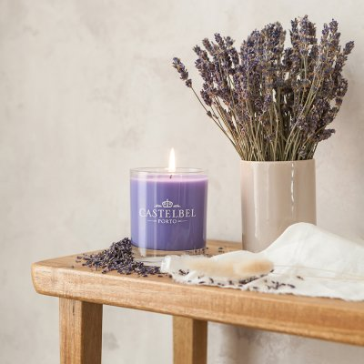
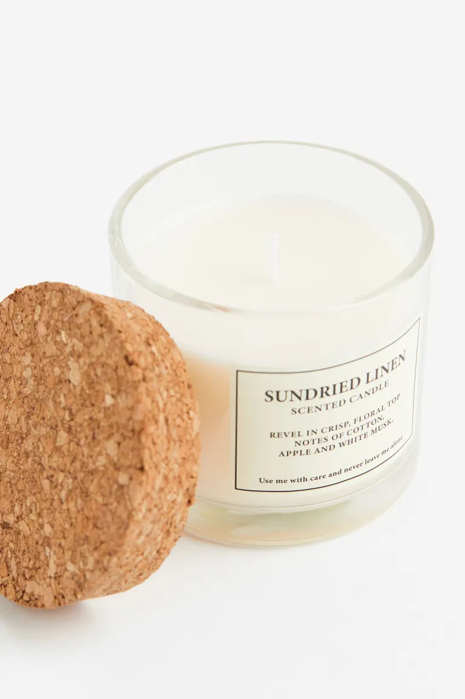

Choose Your Candle

Candle 1
Aromatic Lavender

Candle 2
Vanilla Delight
Your Selection

Candle crafting is a delightful and creative hobby that allows you to express your unique style through the art of candle making. Whether you're a beginner or an experienced crafter, this fascinating world of wax and wick offers endless possibilities for customization. With a little guidance and some imagination, you can create beautiful, handcrafted candles that make perfect gifts, decorations, or even sellable items.
Candle crafting is not only a fun pastime, but it also provides a sense of accomplishment as you watch your ideas come to life in the form of elegant, scented, or colorful candles. It's a fantastic way to unwind and relieve stress while producing beautiful, functional art.
Explore our website to find step-by-step tutorials, tips, and inspiration to ignite your candle crafting journey. From choosing the right wax and fragrance to experimenting with various molds and techniques, we're here to guide you through the process. Join our community of candle crafters and let your creativity shine.
Discover the finest quality candle-making supplies to create your masterpieces.
These are just a few of the supplies you'll need to start your candle crafting journey.
Be sure to explore our tutorials for more detailed information on how to use these supplies to create beautiful candles.
Welcome to Candle Creator, where passion and craftsmanship combine to illuminate your world. We are dedicated to crafting exquisite candles that bring warmth and ambiance to your life. With a commitment to quality and creativity, our candles are more than just wax and wick; they are a reflection of artistry and love.
Our journey began with a simple idea – to create candles that tell stories, evoke emotions, and transform spaces. Every Candle Creator product is hand-poured with care and attention to detail, ensuring that each one is a unique masterpiece. We take pride in using premium, sustainable ingredients to deliver long-lasting, fragrant, and eco-friendly candles that you can enjoy guilt-free.
As a family-owned business, we value the importance of personal touch and customer satisfaction. Your feedback is our inspiration, and your trust is our most treasured asset. We invite you to explore our wide range of candle collections, from classic scents to innovative designs. Join us in celebrating life's special moments with the warm glow of Candle Creator candles.
Illuminate your life with Candle Creator – where every candle is a work of art. Thank you for being a part of our journey.

Aromatic Lavender
Vanilla Delight
Email: info@craftingcandles.com
Phone: +123-456-7890